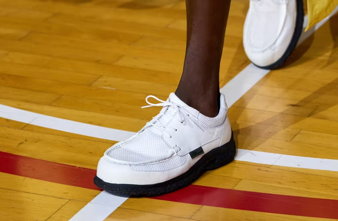
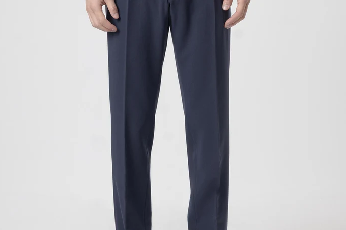

Contenido

Como elegir el pantalón perfecto para cada ocasión
- Pantalones de vestir clásicos: de corte recto o ligeramente entallado, suelen incorporar pinzas y raya frontal marcada. Son adecuados para reuniones, celebraciones y ocasiones de elegancia tradicional.
- Pantalones de traje: confeccionados con el mismo tejido y tinte que la americana, garantizan uniformidad de tono y textura. Se combinan con camisa y corbata o, para un estilo menos rígido, con un jersey fino.
- Pantalones sastre: elaborados con tejidos de calidad y técnicas de sastrería, ofrecen distintos cortes y alturas de cintura. Destacan por su buena caída, por realzar la figura y por mantener su forma durante el día.
Renovar armario este otoño sale mucho más barato con estos ‘packs’ de ropa básica para hombre
Renovar el armario masculino este otoño puede resultar más económico comprando ropa básica en packs. El artículo reúne una selección de lotes de camisetas, sudaderas, ropa interior, calcetines y pantalones de pijama para afrontar el cambio de temporada.
Las propuestas incluyen prendas para el día a día y opciones deportivas, con distintos tejidos, cortes y colores. Comprar varias unidades juntas permite reducir el precio por prenda y reponer los básicos de una sola vez. Una alternativa práctica para quienes buscan comodidad y ahorro al actualizar su fondo de armario.
Enlace a la noticia